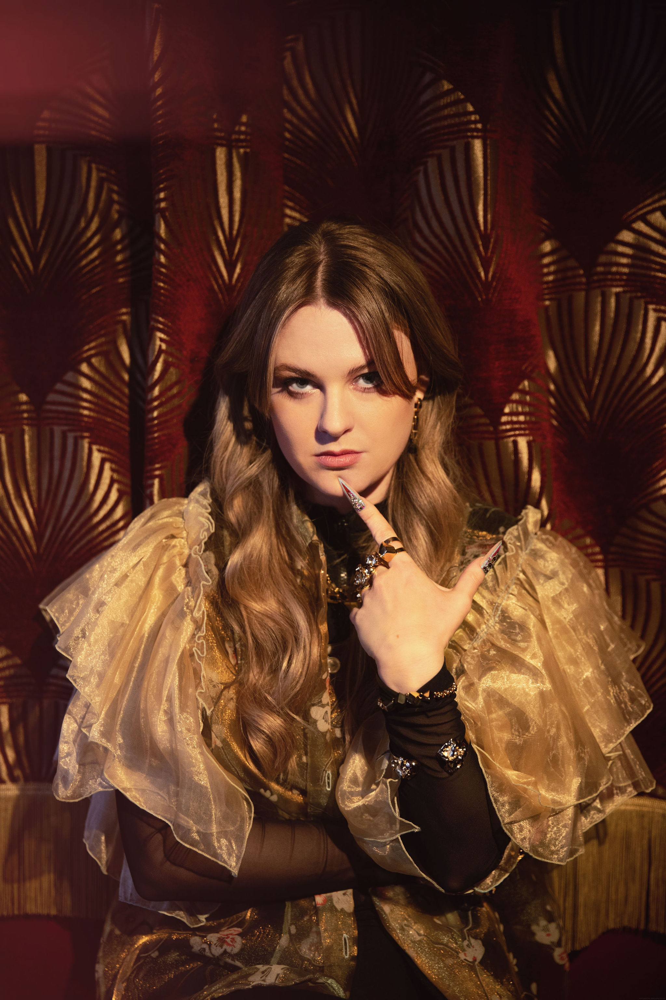

Music from the years 1920–1933. The era when they banned the drink and the music got better.
I never considered jazz to be "my thing" as a musician. To listen to? Daily. To play? Another ball game entirely. And yet something about early jazz — Dixieland, New Orleans, the horn players and piano players of the 1920s — always burned in my fingers. Much of my slide guitar phrasing comes from listening to Louis Armstrong, King Oliver or Red Nichols rather than other slide players. Listening to many great piano players inspired my bass lines on the guitar, like how Blind John Davis accompanied Big Bill Broonzy.
In 2025, a friend introduced me to the Tuesday Jazz Jam at a restaurant called Los Arcos in Malmö, Sweden — ran by renowned Swedish jazz pianist Sven Erik Lundeqvist, known as Svempa. The jam runs 5–9pm, played entirely acoustically, with upright bass players, drummers playing snare with brushes (and sometimes a wine-in-a-box carton), plus trumpets, clarinets, saxophones and singers passing through the town.
I tried to explain that I was a blues guy who couldn't follow the more advanced stuff, but we very quickly found the sweet spot — ragtimey songs of the 1930s and we just took it from there.
Piano, vocals — renowned Swedish jazz pianist
Vocals — jazz singer influenced by early Bessie Smith
Acoustic guitar, slide guitar, vocals
Since January 2025 I've missed only a few of the Tuesday jams — and learned more by being part of this than almost anything else recently. Playing in a band means I don't have to keep rhythm, chords, bass lines and vocal all at once. All of a sudden I can concentrate on the slide solo melody, because the band is pumping so nicely behind me.
During this time, Svempa and I both expressed the wish to perform more widely. While listening to song ideas for the upcoming jams, I noticed a theme forming: the music I loved most all came from the Prohibition era — 1920 to 1933. Louis Armstrong (Svempa and Mac — check!). Fats Waller (Svempa plays — check!). Jelly Roll Morton (Svempa — check!). Songs with lyrics telling stories about the Prohibition itself.
The first pilot gig — at a local brewery in southern Sweden, because what venue could possibly be more suitable — went great. We were joined by Rebecca Bergcrantz, a jazz singer deeply influenced by early Bessie Smith. Rebecca sang three songs, which was enough for all of us to agree: she was in.
"Like the one about Fats Waller who got kidnapped by... oh well, you'll have to come to our gig to find out. Yeah, you can ask your favourite AI — but nothing beats IRL storytelling, yet."
— Homesick Mac

Rebecca Bergcrantz
Rebecca joined us at our very first pilot gig — she sang three songs, and that was enough for all of us to know: she was in.
Deeply influenced by the early Bessie Smith tradition, Rebecca brings a voice that belongs to this music in the most natural way. The songs from the Prohibition era — blues, jazz, the great ballads of the 1920s — suit her perfectly, and she suits them right back.
A trio photo is coming — for now, this is Rebecca.
Louis Armstrong, Fats Waller, Jelly Roll Morton, Bessie Smith — the music of the era's finest, played with genuine love for what makes it work.
Svempa and Mac are also storytellers. Between songs, you'll hear the real stories from Prohibition America — some you won't find by searching online.
Prohibition Jazz & Blues is available for festivals, clubs, restaurant venues and music associations. Get in touch to discuss availability.